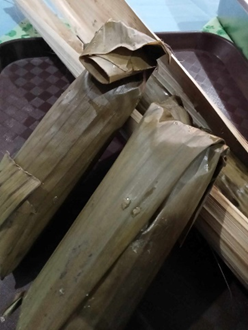
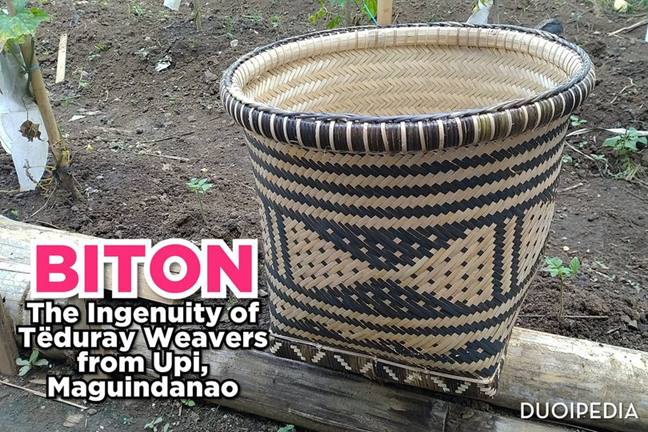

Overview of Upi’s Cultural Heritage
Upi, Maguindanao del Norte, is home to a rich cultural heritage shaped by its diverse ethnic groups, including the Teduray, Maguindanaoans, and settlers. These communities contribute to Upi's unique cultural landscape, each bringing their own customs, traditions, and stories.
Teduray Culture
The Teduray are an Indigenous People who live in Maguindanao Province, Bangsamoro Autonomous Region in Muslim Mindanao, Philippines. Teduray Peoples have a tradition that when a baby is born, the umbilical cord is placed in a biton (basket) and hung on a tree branch. The bearer of the cord whispers to the tree a prayer that the child being born may grow as strong and sturdy as the tree and the forest where it grows, and as rooted to the earth. This practice also known as semedang fused, the umbilical cord with a piece of ginger, and a chunk of charcoal is wrapped with a white cloth, and placed into the biton on a tree branch that face east.
Teduray Peoples have a spiritual belief that views every birth as two sets of twins, consisting of the baby and its umbilical cord. The baby and the cord each have lowoh (bodies) and remogor (souls), but only the baby has a ferenawa (breath-string). Unable to breathe, the umbilical cord twin does not survive after birth. During the labor process, the mother is assisted by a fanday (midwife) to ensure that she delivers safely. Today, the tradition of hanging a baby's umbilical cord onto a tree branch is no longer practiced, and has shifted to the planting of a tree instead.
The traditional role of fanday has changed dramatically in recent times. In 2008, the government imposed the Maternal, Newborn and Child Health and Nutrition Strategy (colloquially known as the No Home Birthing policy), which transferred the role traditionally occupied by Indigenous fanday to professional midwives. Enforcement of this policy means that people must go to a medical center to give birth, even if it is very far from their home, to avoid costly fines. Women who give birth at home and any persons assisting her face fines of up to 2,000 PHP (around $36). In the event of either the death of the mother or baby, the fanday will be fined an additional 5,000 PHP. If they can not pay the fine, they face up to six months in prison. (Gerard Beelt Tiwow, 2023)
National Indigenous Peoples Month
October is recognized as National Indigenous Peoples Month in the Philippines, a time dedicated to honoring and raising awareness about the rich cultural heritage and contributions of indigenous communities. This observance aims to foster greater appreciation among Filipinos for the diverse and vibrant traditions of these groups, which make up at least 10% of the population in many developing countries, including the Philippines. With over 50 distinct indigenous cultural communities in the archipelago, each group offers unique artistic expressions, knowledge systems, and sustainable practices that have been passed down through generations.
Timeline of Significant Events
- 1521: Spain Arrives - Ferdinand Magellan arrives in the Philippines, marking the beginning of the Spanish colonial period.
- 1898: The Philippines Becomes Independent - Emilio Aguinaldo declares the Philippines independent from Spain, becoming the first president.
- 2009: National Indigenous Peoples Month is Declared - President Gloria Macapagal-Arroyo issues Proclamation No. 1906, designating October to honor indigenous peoples' contributions and promote their rights.
- 2022: The Word is Used Officially - The United Nations officially recognizes the term ‘indigenous’ in its documents.
The Tenines
Tëninës (Tëduray ritual hut) is very sacred to the Tëduray and Lambangian Non-Moro Indigenous Peoples like the churches of the Christians and Mosgues of the Moslems,, it is very important to the lives of those wĥo are practicing the culture and identity, a place where they worship God, God the Father (Abay Tulus).
TËNINËS is a ritual hut (can be 5-6 feet X 7-8 feet dimension) of the Spiritual Leaders (Këmamal Këadatan) of the Tëduray and Lambangian Non-Moro Indigenous Peoples in BARMM and South Central Mindanao. It is usually built in identified sacred sites within the Ancestral Domain. It is a structure where the items or sacred materials for ritual being stored and preserved. It is built with round woods as the skeletal support with cogon roofing and rattan strips used to tie together the round woods because nails are not necessary. There is a formed lumber (fënasagi or rounded) erected at the center called "fëtugë" The form of the Tëninës is either "kënula-kula" (tribal design of roofing) or "fënsalag buën" (like a nest of a wild dove). It has "tënuwe" (dropping walls in both sides). It can either be elevated with panel board or bamboo slots as flooring or direct to the ground level.
The traditional role of fanday has changed dramatically in recent times. In 2008, the government imposed the Maternal, Newborn and Child Health and Nutrition Strategy (colloquially known as the No Home Birthing policy), which transferred the role traditionally occupied by Indigenous fanday to professional midwives. Enforcement of this policy means that people must go to a medical center to give birth, even if it is very far from their home, to avoid costly fines. Women who give birth at home and any persons assisting her face fines of up to 2,000 PHP (around $36). In the event of either the death of the mother or baby, the fanday will be fined an additional 5,000 PHP. If they can not pay the fine, they face up to six months in prison. (Gerard Beelt Tiwow, 2023)
Sulagad Farming System
Sulagad is an indigenous concept of food sovereignty practiced by the Teduray and Lambangian tribes. It emphasizes organic farming methods as an alternative to chemical-based products, preserving the land's natural fertility and ensuring the well-being of the community.
Components of Sulagad
- Minor crops like vegetables and root crops
- Permanent crops like coconut, coffee, and fruits
- Animal husbandry and poultry-raising
This system covers the basic needs of food, health, education, shelter, and clothing. It provides organically grown food, ensures good health, supports education through trade, and maintains resources for building shelter and clothing.
Sulagad faces threats from modern agricultural practices introduced in the 1990s, which have harmed farmlands and forests. Climate change and market forces have also affected agricultural production, causing uncertainty in food security.
The Timuay Justice and Governance, the indigenous political structure of the Teduray and Lambangian tribes, has strengthened the Sulagad system as an alternative to chemical farming and genetically modified organisms. With support from NGOs, sustainable agriculture trainings have been conducted, promoting ecological balance for present and future generations.
DXUP-Peace Radio
DXUP-Peace Radio, established in 2004, plays a vital role in fostering communication and peace among the tri-people community of Upi. With its focus on values formation and cultural promotion, it has become an essential part of local governance and community engagement.
The local government recognized the value of communicating with its citizens and initially paid a radio station in Cotabato City for a program. The opportunity for its own station came through the GenPeace project. The municipality committed P500,000 to establish the community radio, serving as an advocacy center, a radio for peace, and a venue for elevating people's concerns. The station, named DXUP FM, was inaugurated on February 8, 2004. It does not have commentary programs but focuses on values formation and promoting tri-people's culture.
A Community Media Education Council (CMEC) was formed to manage the station, which is run by volunteers. The station is mainly funded by the local government, which provides the site, building, and transmitter, and trained volunteers in programming and technical operations. DXUP FM also receives donations and minor income from public service announcements and sponsorships.
The station runs weekly programs from 5 am to 9 pm, covering news, barangay affairs, moral values, and livelihood programs. During elections, it offers live coverage and educates listeners on the electoral process. DXUP FM covers local events and celebrations, continuously updating its programs based on public demand.
The primary benefit of DXUP FM is providing a direct communication link between the government and people, promoting transparency and community participation. It includes discussions on people's rights and culture, bridging cultural gaps. DXUP FM faces challenges like rising expectations, logistical needs, equipment deterioration, and volunteer retention. The station remains dependent on local government support, which could impact its independence and operations in the future.
Upi Community e-Center
The Upi Community e-Center (CeC), established in 2004, transformed the municipality by providing wireless broadband Internet access and a range of ICT services. Initially isolated with limited telecommunications, Upi now boasts a local radio station, TV channel, and improved communication infrastructure.
The CeC offers internet access, document services, IT training, and more. It supports the LGU’s financial efficiency and legislative transparency. The CeC has significantly improved the computer literacy of Upi’s residents and continues to empower the community with urban amenities. Managed by an ICT Council, it remains the only fully operational CeC in Maguindanao Province.
Teduray Culinary and Traditional Foods
The culinary traditions of the Tëduray serve many purposes as they are prepared for events like weddings, rituals, and community gatherings. When sharing a meal together as a community, the Tëduray are united as one and are able to celebrate many of life's trials and joys. Traditional food comes from raw materials and primary products, prepared using traditional methods from Barangay Sefegefen.
Lënumad

Lënumad is a Tëduray delicacy made of malagkit rice cooked in bamboo tubes like the rëbuk or bolo. It is served during times of thanksgiving, weddings, or any other big gatherings in the community.
Sëninga

Sëninga is a special dish on the menu of the Tëduray ancestors. The preparation of this native chicken occurs during big gatherings like rituals, weddings, thanksgiving, and planting season.
Suman
Suman is a type of finger food, made of malagkit rice.
Gënaga Ube
Gënaga ube is a type of finger food and sometimes sweet delicacy made from root crops.
Gënaga Mais
Gënaga mais is sweetcorn that is boiled and served as finger food during gatherings.
Gënaga Kafuk
Gënaga kafuk is a kind of delicacy cooked from root crops such as cassava.
Tënuer
Tënuer is a traditional food of the Tëduray. Cooked using bamboo tubes, the rëbuk consists of rice wrapped with a wild leaf called rëkek. Tënuer does not easily spoil and is served during times of thanksgiving, rituals, and weddings. Leftovers can be served later for breakfast, lunch, and supper, and taken on hunting and fishing trips.
Kërut
Kërut, also known as "KAYOS," is commonly found in forests and serves as food for the Tëduray during times of famine or hardship caused by drought. It is part of the famous "SULAGAD." The process of obtaining Kërut should always be related to the beliefs of the Tëduray, particularly the "Mëgadat," to avoid negative effects on the body such as dizziness. It is important to follow the correct process from extraction to cooking Kërut to avoid possible dangers and ensure the safety of those who consume it.
Traditional Clothing
Tribal clothing of Téduray tribe for women coined “fénligis”, which represents the ‘kégé étéwon’ (identity) of the natives of the tribe and purity of the women.

Male (Lagey) cultural attire: The male IPs/Tëduray should wear long-sleeved “Kmaray” and “Fënokot” (pants).
Female (Libon) cultural attire: The female IPs/Tëduray should wear “Fënligis.”
Timuay Justice and Governance (TJG)
Timuay Justice and Governance (TJG), also known as Kēsēfanangguwit Timuay, is the ancient governance system and leadership practiced by the Tëduray and Lambangian Indigenous Peoples of South Central Mindanao. Although it is not a government entity, it is recognized by the Philippine government under RA 8371 (IPRA) and by the National Commission on Indigenous Peoples (NCIP) as a legitimate Indigenous Political Structure (IPS).
Customary Laws
The law implemented by TJG is composed of Customary Laws: Ukit, Tëgudon, and Dowoy. TJG respects and adheres to the laws, decrees, and regulations of the state while maintaining its own indigenous governance practices.
Structure
As a Governance System and Leadership Title
Timfada Limud (Tribal Congress) is the highest decision-making body, with delegates chosen from different villages and branches of governance. The Supreme Council of Chieftains (Mintéd sa Ingéd - MSI) serves as the policy-making body, with the Executive Council (Sulang Timfada Limud - STL) handling day-to-day operations. TJG also includes various titles based on specific tasks and functions.
In the Ingëd Level (Traditional Territory)
TJG's structure includes the Ingëd (traditional territory) and Fënuwo (villages). Modern adaptations like the Rëmfing Fënuwo (Cluster of Villages) address displacement and fragmentation due to armed conflicts.
Historical Background
TJG faced suppression from the arrival of the Sultanate system, Spanish colonization, and the American period. Despite this, the system continued in a clandestine manner. It was officially revived with the approval of the Indigenous Peoples Rights Act (IPRA) of 1997. The TJG re-emerged through the 1st Timfada Limud in 2002, ensuring the preservation of indigenous governance and cultural heritage.
Today's TJG
Currently, TJG is based on the unified Fusaka Ingëd of the Tëduray and Lambangian, including areas outside the traditional territory. It continues to practice and operationalize Customary Laws, ensuring the well-being and cultural identity of the indigenous communities.
Music
Fëgërung
Ang Fëgërung ay isa sa mga kilalang musical instrument ng mga katutubong Tëduray. Ito ay isang instrumentong mahalaga sa kanilang kultura at tradisyon, na karaniwang ginagamit bilang background music habang nagpeperform ang mga matatandang Tëduray ng kanilang mga Lingëng (Kanta). Ang mga Lingëng na kinakanta ng mga matatanda sa katutubong Tëduray ay karaniwang may mga matalinghagang mga lyrics na nagbibigay kulay at kahulugan sa mga kanta.
Ang tunog na lumalabas mula sa Fëgërung ay nagpapahayag ng tamang emosyon at kuwento na ibinabahagi ng mga matatanda sa pamamagitan ng kanilang mga awitin. Ang mga traditional na instrumento tulad ng Fëgërung ay mahalaga para sa pagpapanatili at pagpapahalaga sa kultura at tradisyon ng mga katutubo. Ito ay nagbibigay-daan sa kanila na maipahayag ang kanilang saloobin at mga kuwento sa pamamagitan ng musika, na nagbibigay ng pagkakataon para mas mapag-aralan, maunawaan, at mahalin pa ang kultura.
Ang pagpapahalaga at pagpapanatili ng mga tradisyonal na instrumento at musika ng mga katutubo ay mahalaga upang mapanatili ang kanilang kinabukasan at halaga sa lipunan. Ito ay patuloy na nagpapalaganap at nagbibigay-buhay sa kanilang kultura, habang nagbibigay-inspirasyon sa mga susunod na henerasyon na ipagpatuloy at mahalin ang kanilang sariling katutubong musika.
Tagung-gu
Ang Tagung-gu ay isang musikal na instrumento ng mga katutubong Tëduray na kakaiba sa karaniwang Togo Instrument. Ang Tagung-gu ay mayroong dalawang string lamang.
Arts
Monom: Teduray Weaving Tradition
Monom is the Teduray weaving tradition. A Teduray household is easily distinguished by the presence of traditional baskets, the most common of which is the “biton”. These baskets are used for storing harvested corn, rice, vegetables, and other crops. The same basket, when covered, is called a “senafeng” and is used to store seeds and rice grains. The bilao or winnow basket in the Teduray dialect is called a tefaya.
Weaving Process
The main material used is “pawa,” a variety of bamboo. For basket rims, “teel” or rattan is used, and to sew the rim, “nito,” a vine, is used. The process of stripping the nito into equal diameters is called “sangaten.” Bamboo is harvested on moonless days to prevent dry rot and extend its useful life.
Buring (Dye)
Buring is a dye made from soot, often burnt rubber, mixed with the sap of camote leaves, which acts as a fixative. This dye is used to color bamboo strips.
Basket and Hat Weaving
The Tedurays have specific names for each part of a basket or woven hat (safyaf), the weaving process, and the different designs they make. Some designs are taboo and believed to bring bad luck, while others can only be executed under specific circumstances.
Sayaf
Sayaf is a Teduray word for hat. It is made of indigenous materials such as bamboo, nito, and rattan. Sayaf was once used solely by a Timuay (Chieftain) but is now widely sold in local markets.
Beliefs
Indigenous beliefs and practices among the Tirurays are primarily animistic. Over time, influences from neighboring Muslim Maguindanao, Roman Catholics, and Episcopalian churches have shaped their spiritual landscape. While some Tirurays have converted to Islam or Christianity, many still adhere to their traditional animistic customs and rituals.
Tiruray knowledge of Christianity comes mainly from Roman Catholics, with additional influences from Episcopalians and other religious groups. Many Tirurays have moved away from animistic beliefs, with several becoming Christians, and some have established Tiruray churches with Tiruray pastors.